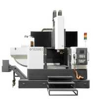
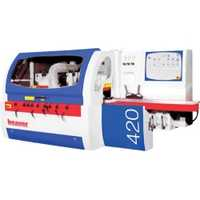
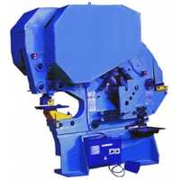
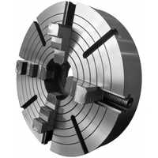
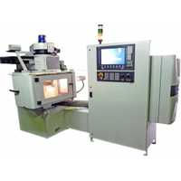

Металлообрабатывающее оборудование
Мобильные металлообрабатывающие машины8Отрезные станки21Ленточнопильные станки28Поперечно-строгальные станки1Долбежные станки6Зубообрабатывающие и резьбообрабатывающие станки14Точильно-шлифовальные станки32Заточные станки112Круглошлифовальные станки17Плоскошлифовальные станки48Резьбонарезные станки9Сверлильные станки69Фрезерные станки63Токарные станки66Обрабатывающие центры11

Деревообрабатывающее оборудование

Кузнечно-прессовое оборудование

Оснастка и приспособления
Тиски31Столы поворотные10Столы коробчатые2Электромагнитные плиты12Суппорты и четырёхпозиционные резцедержатели21Пневмоцилиндры11Патроны токарные94Опоры клиновые и виброопоры3Резцедержатели VDI для автоматических многопозиционных головок34Головки автоматические многопозиционные и делительные диски8Головки электромеханические8Люнеты4
